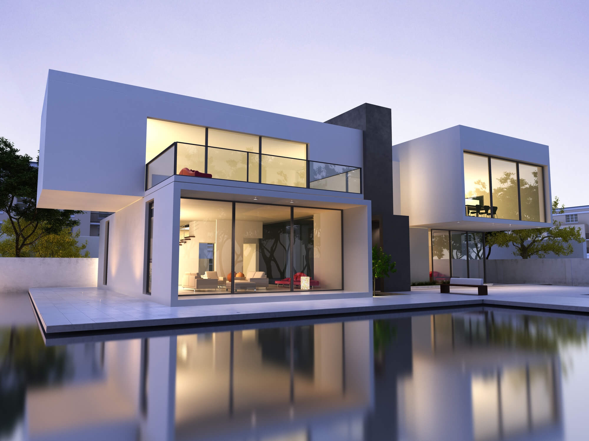

Rhuan Schmidt
Colégio Estdual Profesora Reni Correia Gamper
Matemática II - Programação 1
Arquitetura moderna

A arquitetura moderna é um estilo arquitetônico que surgiu no final do século XIX e se desenvolveu ao longo do século XX. Caracteriza-se por linhas limpas, simplicidade, uso de materiais industriais, e uma ênfase na funcionalidade e eficiência. Arquitetos modernistas como Le Corbusier e Mies van der Rohe foram pioneiros desse movimento, promovendo a ideia de "menos é mais". A arquitetura moderna rejeitou ornamentos e tradições em favor de formas puras e inovações tecnológicas, influenciando muitos edifícios e estruturas icônicas em todo o mundo.
A arquitetura moderna desempenhou um papel significativo na evolução do design e no desenvolvimento das cidades em todo o mundo. Sua importância inclui:
Inovação e Tecnologia: A arquitetura moderna frequentemente incorpora novas tecnologias e materiais, impulsionando o progresso na construção e na indústria.
Eficiência Funcional: A ênfase na funcionalidade e na otimização de espaços atende às necessidades práticas dos ocupantes, tornando edifícios mais eficientes.
Estética Contemporânea: A estética moderna oferece uma perspectiva contemporânea, refletindo a cultura e os valores da época em que foi concebida.
Sustentabilidade: Muitos princípios da arquitetura moderna, como o uso de materiais sustentáveis e eficiência energética, contribuem para práticas mais ecológicas.
Legado Cultural: Edifícios modernos icônicos tornaram-se parte do patrimônio cultural e arquitetônico, representando marcos históricos e símbolos de inovação.
Influência em Design de Interiores: A arquitetura moderna influenciou o design de interiores, promovendo espaços abertos, luminosos e minimalistas.
Flexibilidade e Versatilidade: Projetos modernos muitas vezes enfatizam a versatilidade, permitindo adaptações ao longo do tempo.
Integração com o Ambiente: Muitos projetos modernos incorporam técnicas de paisagismo e integram-se harmoniosamente com o ambiente circundante.
Urbanismo: A arquitetura moderna contribuiu para o planejamento urbano, promovendo o desenvolvimento de cidades mais funcionais e acessíveis.
Arquitetura moderna é caracterizada por simplicidade, funcionalidade e uso de materiais industriais. Linhas limpas, espaços abertos, cores neutras e inovação tecnológica são marcas distintas desse estilo. Sua ênfase na eficiência, sustentabilidade e integração com a natureza a torna relevante até hoje.